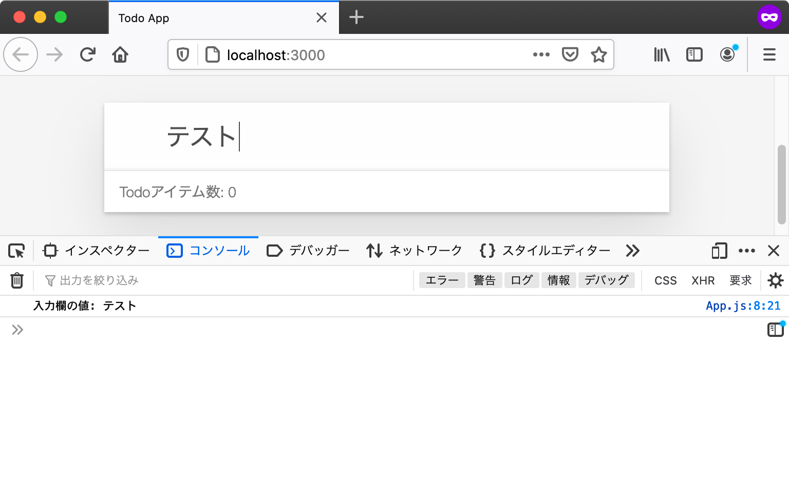
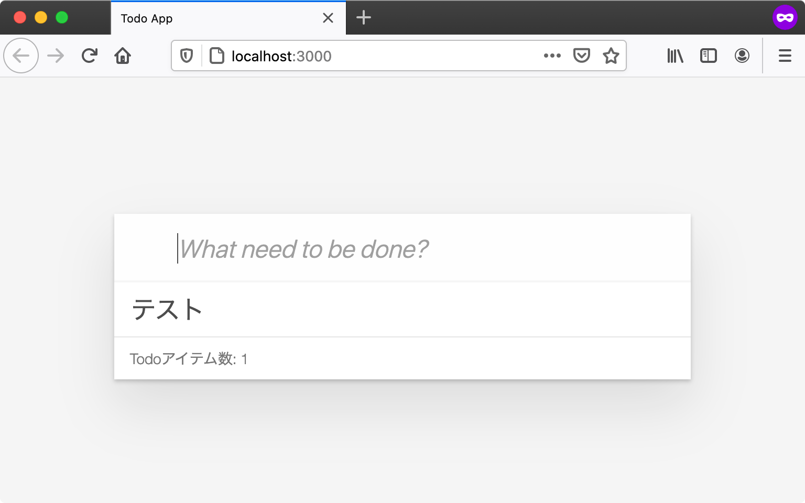

Todoアイテムの追加を実装する
ここからはJavaScriptでTodoアプリの機能を作成していきます。
このセクションでは、前のセクションでHTMLに目印をつけたTodoリスト（#js-todo-list）に対してTodoアイテムを追加する処理を実装します。
Todoアイテムの追加
まず、Todoアプリではどのような操作をしたら、Todoアイテムを追加できるかを見ていきます。
Todoアプリでは、ユーザーが次のような操作をした場合に、Todoアイテムを追加します。
- 入力欄にTodoアイテムのタイトルを入力する
- 入力欄でEnterキーを押して送信する
- TodoリストにTodoアイテムが追加される
これをJavaScriptで実現するには次のことが必要です。
- Todoアイテムのタイトルを取得するために、input要素（入力欄）から内容を取得する
- Enterキーで送信されたことを知るために、form要素の
submitイベント（送信）を監視する - 入力内容をタイトルにしたTodoアイテムを作成し、Todoリスト（
#js-todo-list）にTodoアイテム要素を追加する
まずは、form要素から送信されたイベントを受け取り、入力内容をコンソールログに表示してみることからはじめてみましょう。
入力内容をコンソールに表示する
form要素でEnterキーを押して送信するとsubmitイベントが発生します。
このsubmitイベントはHTML要素のaddEventListenerメソッドを利用することで受け取れます。
次のコードでは、指定したform要素からsubmitイベントが発生したときに呼び出されるコールバック関数を登録しています。
// `id="js-form"`の要素を取得
const formElement = document.querySelector("#js-form");
// form要素から発生したsubmitイベントを受け取る
formElement.addEventListener("submit", (event) => {
// イベントが発生したときに呼ばれるコールバック関数（イベントリスナー）
});
このようなイベントが発生した際に呼ばれるコールバック関数のことをイベントリスナー（イベントをリッスンするものという意味）と呼びます。 またイベントリスナーはイベントハンドラーとも呼ばれることがありますが、この書籍ではこの2つの言葉は同じ意味として扱います。
フォームが送信されたときに入力内容をコンソールに表示するには、
addEventListenerコールバック関数内で入力内容をConsole APIで出力すればよいことになります。
入力内容はinput要素のvalueプロパティから取得できます。
const inputElement = document.querySelector("#js-form-input");
console.log(inputElement.value); // => "input要素の入力内容"
これらを組み合わせてApp.jsに「入力内容をコンソールに表示」する機能を実装してみましょう。
Appクラスにmountというメソッドを定義して、その中に処理を書いていきましょう。
次のコードでは、フォーム（#js-form）をEnterで送信すると、input要素（#js-form-input）の内容をコンソールへ表示する処理を実装しています。
src/App.js
export class App {
mount() {
const formElement = document.querySelector("#js-form");
const inputElement = document.querySelector("#js-form-input");
formElement.addEventListener("submit", (event) => {
// submitイベントの本来の動作を止める
event.preventDefault();
console.log(`入力欄の値: ${inputElement.value}`);
});
}
}
このままでは、Appのmountメソッドは呼び出されないため何も行われません。
そのため、index.jsも変更して、Appクラスのmountメソッドを呼び出すようにします。
index.js
import { App } from "./src/App.js";
const app = new App();
app.mount();
これらの変更後にブラウザでページをリロードすると、Appのmountメソッドが実行されるようになります。
submitイベントがリッスンされているので、入力欄に何か入力してEnterで送信してみるとその内容がコンソールに表示されます。

先ほどのAppのmountメソッドでは、submitイベントのイベントリスナー内でevent.preventDefaultメソッドを呼び出しています。
event.preventDefaultメソッドは、submitイベントの発生元であるフォームが持つデフォルトの動作をキャンセルするメソッドです。
フォームが持つデフォルトの動作とは、フォームの内容を指定したURLへ送信するという動作です。
ここではform要素に送信先が指定されていないため、現在のURLに対してフォームの内容を送信します。
しかしこの動作は邪魔になるため、event.preventDefaultメソッドを呼び出すことで、このデフォルトの動作をキャンセルしています。
src/App.jsより抜粋
formElement.addEventListener("submit", (event) => {
// submitイベントの本来の動作を止める
event.preventDefault();
console.log(`入力欄の値: ${inputElement.value}`);
});
現在のURLに対してフォームの送信が行われると、結果的にページがリロードされてしまいます。
そのため、event.preventDefault()を呼び出し、デフォルトの動作をキャンセルしていました。
event.preventDefault()をコメントアウトすると、ページがリロードされてしまうことが確認できます。
src/App.jsから一部をコメントアウトした例
formElement.addEventListener("submit", (event) => {
// preventDefaultしないとページがリロードされてしまう
// event.preventDefault();
console.log(`入力欄の値: ${inputElement.value}`);
});
ここまででtodoappディレクトリに、次のような変更を加えました。
todoapp
├── index.html
├── index.js (Appクラスのmountメソッドの呼び出し)
└── src
└── App.js (Appクラスのmountメソッドの実装)
ここまでのTodoアプリは次のURLで確認できます。
入力内容をTodoリストに表示する
フォーム送信時に入力内容を取得する方法がわかったので、次はその入力内容をTodoリスト（#js-todo-list）に表示します。
HTMLではリストのアイテムを記述する際には<li>タグを使います。
また後ほどTodoリストに表示するTodoアイテムの要素には、完了状態を表すチェックボックスや削除ボタンなども含めたいです。
これらの要素を含むものを手続き的にDOM APIで作成すると見通しが悪くなるため、HTML文字列からHTML要素を生成するユーティリティモジュールを作成しましょう。
次のhtml-util.jsというファイルをsrc/view/html-util.jsというパスに作成します。
このhtml-util.jsは「ajaxapp: HTML文字列をDOMに追加する」でも利用したescapeSpecialCharsをベースにしています。
ajaxappでのescapeHTMLタグ関数では出力はHTML文字列でしたが、今回作成するelementタグ関数の出力はHTML要素（Element）です。
Todoリスト（#js-todo-list）というすでに存在する要素に対して要素を追加するには、HTML文字列ではなくHTML要素が必要になります。
また、HTML文字列に対してはaddEventListenerでイベントをリッスンできません。
そのため、チェックボックスの状態が変わったことや削除ボタンが押されたことを知る必要があるTodoアプリではHTML要素が必要になります。
src/view/html-util.js
export function escapeSpecialChars(str) {
return str
.replace(/&/g, "&")
.replace(/</g, "<")
.replace(/>/g, ">")
.replace(/"/g, """)
.replace(/'/g, "'");
}
/**
* HTML文字列からHTML要素を作成して返す
* @param {string} html
*/
export function htmlToElement(html) {
const template = document.createElement("template");
template.innerHTML = html;
return template.content.firstElementChild;
}
/**
* HTML文字列からDOM Nodeを作成して返すタグ関数
* @return {Element}
*/
export function element(strings, ...values) {
const htmlString = strings.reduce((result, str, i) => {
const value = values[i - 1];
if (typeof value === "string") {
return result + escapeSpecialChars(value) + str;
} else {
return result + String(value) + str;
}
});
return htmlToElement(htmlString);
}
/**
* コンテナ要素の中身をbodyElementで上書きする
* @param {Element} bodyElement コンテナ要素の中身となる要素
* @param {Element} containerElement コンテナ要素
*/
export function render(bodyElement, containerElement) {
// containerElementの中身を空にする
containerElement.innerHTML = "";
// containerElementの直下にbodyElementを追加する
containerElement.appendChild(bodyElement);
}
elementタグ関数では、同じファイルに定義したhtmlToElement関数を使ってHTML文字列からHTML要素を作成しています。
htmlToElement関数の中で利用しているtemplate要素はHTML5で追加された、HTML文字列の断片からHTML要素を作成できる要素です。
このelementタグ関数を使うことで、次のようにHTML文字列からHTML要素を作成できます。
作成した要素は、appendChildメソッドなどで既存の要素に子要素として追加できます。
elementタグ関数のサンプルコード
import { element } from "./html-util.js";
// HTML文字列からHTML要素を作成
const newElement = element`<ul>
<li>新しい要素</li>
</ul>`;
// 作成した要素を`document.body`の子要素として追加（appendChild）する
document.body.appendChild(newElement);
ブラウザが提供するappendChildメソッドは子要素を追加するだけなので、すでに別の要素がある場合は末尾に追加されます。
render関数は指定したコンテナ要素（親となる要素）の子要素を上書きする関数となります。
動作的には一度子要素をすべて消したあとにappendChildで子要素として追加しています。
render関数のサンプルコード
import { element, render } from "./html-util.js";
// renderの前に、要素をdocument.bodyへ追加する
const oldElement = element`<ul>
<li>既存の要素</li>
</ul>`;
document.body.appendChild(oldElement);
// 新しい要素を作成する
const newElement = element`<ul>
<li>新しい要素</li>
</ul>`;
// `newElement`を`document.body`の子要素として追加する
// すでに`document.body`以下にある要素は上書きされる
render(newElement, document.body);
実際に、このelementタグ関数とrender関数を使って、フォームから送信された入力内容をTodoリストに要素として追加してみます。
まず最初に、App.jsから先ほど作成したhtml-util.jsのelementタグ関数とrender関数をimportします。
次に、TodoアイテムをまとめるリストをtodoListElementとして定義し、表示されているTodoアイテムの数をtodoItemCountとして定義します。
submitイベントのリスナー関数で、入力された内容をもとにTodoリストとTodoアイテム数の表示を更新していきます。
Todoアイテムを表現する要素を作成し、Todoリストの子要素として追加（appendChild）して、render関数を使ってコンテナ要素の中身にTodoリストで上書きしています。
最後にTodoアイテムの数を1増やして、Todoアイテム数（#js-todo-count）のテキスト（textContent）を更新します。
src/App.js
import { element, render } from "./view/html-util.js";
export class App {
mount() {
const formElement = document.querySelector("#js-form");
const inputElement = document.querySelector("#js-form-input");
const containerElement = document.querySelector("#js-todo-list");
const todoItemCountElement = document.querySelector("#js-todo-count");
// TodoリストをまとめるList要素
const todoListElement = element`<ul></ul>`;
// Todoアイテム数
let todoItemCount = 0;
formElement.addEventListener("submit", (event) => {
// 本来のsubmitイベントの動作を止める
event.preventDefault();
// 追加するTodoアイテムの要素(li要素)を作成する
const todoItemElement = element`<li>${inputElement.value}</li>`;
// TodoアイテムをtodoListElementに追加する
todoListElement.appendChild(todoItemElement);
// コンテナ要素の中身をTodoリストをまとめるList要素で上書きする
render(todoListElement, containerElement);
// Todoアイテム数を+1し、表示されてるテキストを更新する
todoItemCount += 1;
todoItemCountElement.textContent = `Todoアイテム数: ${todoItemCount}`;
// 入力欄を空文字列にしてリセットする
inputElement.value = "";
});
}
}
これらの変更後にブラウザでページをリロードし、フォームに入力してからEnterを押すとTodoリストにTodoアイテムが追加されます。
また、入力内容を送信するたびにtodoItemCountが加算され、Todoアイテム数の表示も更新されます。

このセクションでの変更点は次のとおりです。
todoapp
├── index.html
├── index.js
└── src
├── App.js(Todoアイテムの表示の実装)
└── view
└── html-util.js(新規追加)
ここまでのTodoアプリは次のURLで確認できます。
まとめ
このセクションではform要素のsubmitイベントをリッスンし、入力内容を元にTodoアイテムを作成し、これをTodoリストに追加する機能を実装しました。
今回のTodoアイテムの追加のように、多くのウェブアプリは何らかのイベントをリッスンして表示を更新します。
このような、イベントが発生したことを元に処理を進める方法をイベント駆動（イベントドリブン）と呼びます。
今回のTodoアイテムの追加では、submitイベントを入力にして、Todoリスト要素を直接HTML要素として追加するという方法を取っていました。
このように直接DOMを更新するという方法はコードが短くなりますが、DOMのみにしか状態が残らないため柔軟性がなくなるという問題があります。
次のセクションでは、実際に起きる問題やそれを解決するための仕組みを見ていきます。
このセクションのチェックリスト
- フォームの送信を
submitイベントで受け取り、入力内容を確認した - HTML文字列からHTML要素を作成する
html-util.jsを実装した - フォームからTodoアイテムを追加した
- Todoアイテムの追加に合わせてTodoアイテム数を更新した
このセクションで、TodoアプリにTodoアイテムを追加する機能が実装できました。
- Todoアイテムを追加できる
Todoアプリに実装する残りの機能は次のとおりです。
- Todoアイテムの完了状態を更新できる
- Todoアイテムを削除できる